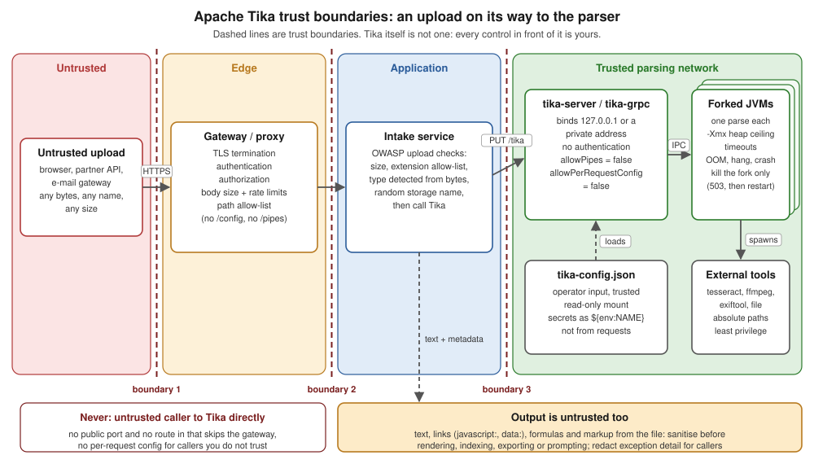

Security
|
This content was generated with the assistance of AI and should be verified against the official documentation before being relied on in production. The reference material consulted while preparing these pages is listed in the section bibliography. |
Baseline date: 2026-10-12. This page was written against Apache Tika 4.1.0 (the latest release on Maven Central on that
date) with the 3.3.x differences noted, Java 21 and later for the examples (Tika 4.x needs Java 17), Spring Boot 4.x on
Spring Framework 7 and the Docker image apache/tika:4.1.0. Tika exists to open files that somebody else made. In the
Bookshelf intake service those files come from authors, publishers, scanners and e-mail, and any of them can be
broken by accident or crafted on purpose. This page explains what the Tika project promises and what it leaves to you:
the official security model, the trust boundaries of a deployment, why tika-server and tika-grpc must never face
untrusted callers, the capability flags that limit what a caller can reach, external commands, XML external entities
(XXE) and the XFA vulnerability, credentials, upload validation, the CVE history and how to stay updated.
Related pages: Robustness, Limits & Timeouts (the limits
that bound a parse), Tika Pipes (the process isolation this page relies on),
Tika Server (REST API),
Tika gRPC, tika-app Command Line,
Docker & Kubernetes Deployment,
Configuration (tika-config.json and its environment-variable secrets),
Extending Tika (writing an ExternalParser) and
PDF Parsing (XFA in detail). For the limits of Apache POI itself (zip bombs,
record sizes, DOCTYPE handling in Office files) see
Office Files: Security & Untrusted Files, which this page
does not repeat.
What was run for this page: a tika-server 4.1.0 from the official tika-server-standard-4.1.0.zip on Java 25 (default
binding, the 403 for per-request configuration, the start-up refusal without allowPipes, the 413 request-size limit,
TLS with an environment-variable keystore password, exception redaction and the refusal of a per-request redaction
override), and three Java programs compiled against tika-core, tika-parsers-standard-package,
tika-pipes-fork-parser and tika-serialization 4.1.0 (an upload gate, a gate in front of PipesForkParser, and an
external parser plus FileCommandDetector configured with absolute paths). The CVE list was checked against the Tika
security page and the CVE records on 2026-10-12. The reverse-proxy and Kubernetes examples were not run. The section
What was verified and what was not has the details.
The security model
The Tika project publishes a short security model that decides what counts as a vulnerability. Reading it first saves a lot of wrong assumptions, because it is stricter than most people expect. It separates two risks and one assumption:
| Risk | Applies when | Who is responsible |
|---|---|---|
Untrusted data |
Always: whenever Tika parses a file you did not create, however you run Tika. |
The project fixes bugs and treats some failures as vulnerabilities (below). Containing a hostile file is the caller’s job. |
Untrusted callers |
Only when you expose tika-server or tika-grpc over a network. |
The operator. The project says plainly that securing access is not its responsibility. |
Trusted configuration |
Always: the |
The operator. A setting that enables a dangerous capability does what it was asked. |
Untrusted data: Tika is not a security boundary
The model states that Tika is used on untrusted data every day and that the project invests in handling it safely, but that Tika itself is not a security boundary. It depends on many third-party format libraries (PDFBox, POI, Commons Compress, metadata-extractor, and many more), any of which can contain an undiscovered flaw. The working assumption is that a hostile file may crash the parsing process, hang it or take it over. The defences are yours: sandboxing, network isolation, resource limits and least privilege, sized to your threat model.
Two further statements matter for an intake service:
-
Detection and extraction can be fooled. A file can be crafted so that type detection or text extraction gives a wrong answer. Do not use either as the only check in a high-risk decision (cross-domain filtering, malware gates, search that controls access).
-
Tika does not recognise "weird" files. Polyglots (a file that is valid as two formats), chimeras and other parser differentials are not flagged. Tika will happily extract one reading of such a file.
Denial of service: in-process versus Pipes
This is the rule most people get wrong. When you call AutoDetectParser (or the Tika facade, or any parser) directly,
the parse runs on your thread and in your heap. The model says that denial of service is then not a security issue:
an OutOfMemoryError, a StackOverflowError, an endless loop or a crash caused by a malformed file is a bug to report
in JIRA, and containing it is the caller’s responsibility. The 4.1.x security page adds that the limits
(output-limits.writeLimit, embedded-limits.maxCount, the metadata limiter) bound what a parse produces, not the
work it does to produce it.
Process isolation changes this, and it is a mechanism rather than advice. Tika Pipes, PipesForkParser, tika-server and
tika-grpc parse each document in a forked JVM. A parse that runs out of memory, hangs or crashes kills the fork, not
your process: the fork is restarted and the caller gets a status (OOM, TIMEOUT or UNSPECIFIED_CRASH, HTTP 503
from tika-server) instead of a dead JVM.
The boundary is conditional. A document that defeats the limits of Pipes itself (escaping the heap ceiling, the timeout or the process boundary) is a bug in Tika that the project treats as a security issue.
| What happened | Security issue? | What to do |
|---|---|---|
An in-process |
No: a bug |
Report it in JIRA; move the parse out of process. |
An in-process parse loops forever |
No: a bug |
Same. A thread cannot be stopped safely, a process can. |
A forked parse runs out of memory or hangs and is killed |
No: the sandbox worked |
Handle the 503 / |
A file makes a forked parse escape its heap ceiling or timeout, or affect the parent process |
Yes |
Report it privately to security@apache.org, not in a public issue. |
A file makes Tika read a local file or reach a URL it should not (XXE, path traversal) |
Yes, from a default configuration |
Report it privately; see the CVE history below. |
Tika’s output contains a |
No: output is untrusted by design |
Sanitise before rendering, exporting or prompting. |
A finding needs |
No: a hardening suggestion |
The operator enabled a powerful capability; the same access from a default configuration would be a vulnerability. |
A setting is accepted but silently has no effect (a limit parsed and never enforced) |
Yes |
Report it: the operator believes they are protected and is not. |
Extracted output is untrusted
Tika’s output is an extraction, not a sanitised rendering. The XHTML, Markdown, text and metadata carry whatever the
file contained: hyperlinks with any URI scheme (including javascript: and data:), cell values that look like
formulas, control characters and fragments of markup. The security model makes hostile content in the output the
consumer’s responsibility. For Bookshelf that means:
-
escape the text before putting it in an HTML page (a review snippet, a search result highlight);
-
neutralise leading
=,+,-and@before writing extracted values to a CSV or spreadsheet (the Office Files security page has a compiled sanitiser); -
treat extracted text sent to an LLM as untrusted input that may carry instructions (prompt injection): keep it in a delimited data section and never let it choose tools or recipients;
-
never use extracted metadata (a
dc:creator, a file name inside a zip) as a path, a query or a command.
Configuration is trusted input
The tika-config.json file and the command line that start the process come from the operator. Tika rejects unknown
keys at load time, so a typo fails loudly, and per-request configuration is off by default. The consequences:
-
Whoever can write
tika-config.jsoncan make Tika run programs (external-parser), read any directory a fetcher can reach and write wherever an emitter points. Treat the file as code: under version control, reviewed, mounted read-only. -
Never build the file from request data, and never let a user choose which preset, parser or fetcher configuration is loaded beyond a fixed allow-list.
-
The directory given as
tika.extras.dir(or mounted at/tika-extrasin the Docker image) and theplugins/directory are code locations: whatever jar is there runs with the full privileges of the Tika process.
Reporting a vulnerability
Report a suspected vulnerability privately to security@apache.org, following the Apache Software Foundation security process. Do not open a public JIRA issue or a GitHub pull request for it. Ordinary robustness bugs (an in-process OOM, a parser exception) go to the Tika JIRA as usual.
Trust boundaries of a deployment
The figure follows one Bookshelf upload from the internet to the forked parser. Every dashed line is a trust boundary where something must be checked, and none of those checks is done by Tika.

| Boundary | Crossing | Controls that belong here |
|---|---|---|
1 |
The internet to the edge |
TLS, authentication and authorisation of the user, request size limits, rate limits, a path allow-list. Tika has none of these. |
2 |
The edge to the application |
The application knows who the user is and what they may upload. It validates the upload (size, extension allow-list, type detected from bytes, a random storage name) before any parser runs. |
3 |
The application to Tika |
Only the application can reach tika-server or tika-grpc: a loopback or private address, a firewall rule or a Kubernetes |
inside Tika |
The server to its forks and tools |
Process isolation with a heap ceiling and timeouts, external tools on absolute paths, an unprivileged user, no network unless a fetcher needs it. |
out |
Tika back to the application |
The extracted text and metadata are untrusted again: sanitise before rendering, indexing or prompting, and redact exception detail for callers. |
The same picture applies to the library path: replace tika-server with PipesForkParser inside the intake service, and
boundary 3 becomes the process boundary of the fork.
tika-server and tika-grpc are not security boundaries
The 4.1.x documentation repeats this on the security page, the server page and the gRPC page: neither tika-server nor tika-grpc is a security boundary. They do not authenticate or authorise callers, and parsing untrusted documents is risky in itself. Expose them only to trusted callers on a trusted network, never directly to untrusted users or the public internet, and put your own authentication, authorisation and network controls in front of them.
The practical rules:
-
Only your services call Tika. Users upload to your application; your application calls Tika. There is no "public Tika endpoint" design that is safe.
-
Bind narrowly. Loopback when the caller is on the same host, a private interface or a cluster-internal Service otherwise.
-
Authenticate in front. A reverse proxy or API gateway, two-way TLS, or a service mesh with mTLS plus a network policy.
-
Leave the capability flags off unless a trusted caller needs them, and then expose that capability on a separate, more restricted instance.
-
Run with least privilege: not as root, read-only configuration, no write access beyond a temporary directory, no outbound network unless a fetcher or VLM needs it.
Source: Apache Tika 4.1.x, Security (Tika Server and gRPC Trust Model) and Apache Tika 4.1.x, Tika Server (Security).
Binding: 127.0.0.1 by default, 0.0.0.0 in Docker
tika-server binds to localhost unless told otherwise. -h (or --host, or server.host in the JSON) changes it,
and -h * is translated to 0.0.0.0, all interfaces. Started from the zip with only a port:
java -jar tika-server-standard-4.1.0.jar -c default.json # {"server": {"port": 19824}}
lsof -nP -iTCP:19824 -sTCP:LISTEN
curl -s http://localhost:19824/versionOutput:
COMMAND PID USER FD TYPE DEVICE SIZE/OFF NODE NAME
java 6048 bookshelf 157u IPv6 0x9e248419a33f0651 0t0 TCP 127.0.0.1:19824 (LISTEN)
Apache Tika 4.1.0The official Docker image is different: its entry point already passes -h 0.0.0.0, so inside the container the server
listens on every interface, and the documentation says not to pass -h again. What reaches it is then decided by how
you publish the port. Publish it on the host’s loopback only, or not at all when the caller runs in the same Docker
network or Kubernetes namespace:
# reachable from this host only
docker run -d --name tika -p 127.0.0.1:9998:9998 apache/tika:4.1.0-1
# reachable only from containers on the private "bookshelf" network: no -p at all
docker network create --internal bookshelf
docker run -d --name tika --network bookshelf apache/tika:4.1.0-1A plain -p 9998:9998 publishes the port on every host interface, and Docker’s own firewall rules can bypass a host
firewall such as ufw. That is the most common way a Tika instance ends up on the internet.
Source: Apache Tika 4.1.x, Tika Server (Command Line Options) and Apache Tika 4.1.x, Running Tika in Docker. The Docker commands were not run for this page; the image facts come from the 4.1.x Docker page.
The image also runs as UID/GID 35002, not root, and keeps the distribution in a root-owned /opt/tika-server. Keep it
that way: do not add --user root, and mount configuration read-only (:ro). The
Docker & Kubernetes Deployment page covers resource
limits and health checks; Docker: Security covers container
hardening in general.
Authentication in front: a gateway
tika-server has no built-in token, API-key, JWT or OAuth2 support. The TLS page of the 4.1.x documentation recommends the
common shape: a reverse proxy (nginx, Apache httpd, Traefik) or an API gateway terminates TLS and authenticates callers,
and Tika runs on plain HTTP on loopback or a private network behind it. The proxy is also the natural place for a path
allow-list (so /config, /pipes and /async are unreachable even if a flag is turned on by mistake), a body size
limit, timeouts and rate limits.
An nginx sketch for the Bookshelf intake service: only PUT to /tika, /rmeta and /detect, after an
authentication sub-request to the application’s own auth service. The names auth.internal and tika are placeholders
for your services.
upstream tika_backend { server tika:9998; }
server {
listen 443 ssl;
server_name tika-gw.bookshelf.internal;
ssl_certificate /etc/nginx/tls/gw.crt;
ssl_certificate_key /etc/nginx/tls/gw.key;
client_max_body_size 50m; # below tika-server's maxRequestSizeBytes
proxy_read_timeout 180s; # above the parse timeout, so Tika answers first
# every request is authenticated by the application's auth service
location = /_auth {
internal;
proxy_pass http://auth.internal/verify;
proxy_pass_request_body off;
proxy_set_header Content-Length "";
proxy_set_header X-Original-URI $request_uri;
}
# the only paths and the only method the intake service needs
location ~ ^/(tika|rmeta|detect)(/(text|md|json|html|xml))?$ {
auth_request /_auth;
limit_except PUT { deny all; }
proxy_request_buffering off;
proxy_pass http://tika_backend;
}
# everything else, including /config, /pipes, /async, /unpack and /status
location / { return 404; }
}Source: Apache Tika 4.1.x, TLS/SSL Configuration (Should
you configure TLS here at all?), nginx,
ngx_http_auth_request_module and nginx,
client_max_body_size. This configuration was not run for this page; validate it with nginx -t and a test request
for every blocked path.
Two details matter. First, the proxy’s body limit should be at or below tika-server’s maxRequestSizeBytes, so oversize
uploads are refused at the edge. Second, a path allow-list must match the 4.x endpoint shapes: 4.x names the output
format in the path (/tika/text, /rmeta/md) instead of the 3.x Accept header, and per-request configuration lives
under /config path segments, which the regular expression above never matches.
The capability flags: defence in depth
The flags below limit what a caller who reaches Tika can do. The documentation is explicit that they are defence in depth, not security boundaries: they do not make it safe to expose the service to untrusted callers. All default to off.
| Setting | Default | Where | What it gates |
|---|---|---|---|
|
|
|
The |
|
|
|
The |
|
all default endpoints |
|
Which endpoints exist at all. Omitting one also removes SPI resources bound to its path. |
|
1 GiB |
|
The largest request body, enforced on bytes read (chunked uploads too); larger requests get 413. Bodies above |
|
empty string (off) |
|
Browser cross-origin access. Keep it off: browsers should never call Tika. |
|
|
|
|
|
|
|
|
There is no command-line flag for any of these: -h, -p, -i and --metricsPort are the only options that override
the JSON, and everything else (the flags, CORS, TLS, timeouts) is JSON-only. That is deliberate: enabling a dangerous
capability is a visible line in a reviewed file.
The behaviour, observed on the tika-server 4.1.0 started above with the default configuration:
curl -s -w '\nHTTP %{http_code}\n' -X POST -F "file=@catalogue.txt" \
-F 'config={"output-limits":{"writeLimit":10}};type=application/json' \
http://localhost:19824/tika/config/textConfig endpoints are disabled. Set allowPerRequestConfig=true in server config.
HTTP 403And with { "server": { "port": 19825, "endpoints": ["tika", "rmeta", "pipes"] } }, the server stops at start-up
(the message as logged, stack trace omitted):
ERROR [main] org.apache.tika.server.core.TikaServerProcess Can't start:
org.apache.tika.exception.TikaConfigException: The following selected endpoint(s) require the pipes machinery to be
enabled: [pipes]. Set 'allowPipes' to true in the 'server' section of your tika-config and confirm you understand the
security implications (see the tika-server documentation). These endpoints expose process-isolated fetching and
parsing, which can read files and reach network resources.Source: Apache Tika 4.1.x, Tika Server (Security, Configuration) and Apache Tika 4.1.x, Tika gRPC (Capability flags).
Presets instead of per-request configuration
When callers really need different parse settings (OCR for scans, no OCR for born-digital PDFs), prefer presets to
allowPerRequestConfig. A preset is a named parse-context fragment that the operator defines in the server
configuration and the caller only selects by name (/tika/preset/<name>, /rmeta/preset/<name>,
/unpack/preset/<name>). Presets do not need allowPerRequestConfig, never combine with request-supplied
configuration, are logged at start-up, and give the proxy an addressable path to allow or block (allow
/rmeta/preset/ while blocking /rmeta/config). They run with the trust of the configuration file, so review a preset
as carefully as the rest of the file. The Tika Server (REST API)
page shows how to define them.
A hardened tika-server configuration
The configuration the Bookshelf intake service runs with: loopback only, the four endpoints it uses, a 50 MiB request limit, TLS with the keystore password from the environment, redacted exception messages, and both capability flags at their default (off), which is why they are not in the file.
{
"server": {
"host": "127.0.0.1",
"port": 19826,
"endpoints": ["tika", "rmeta", "detect", "version"],
"maxRequestSizeBytes": 52428800,
"tlsConfig": {
"active": true,
"keyStoreType": "PKCS12",
"keyStoreFile": "/etc/tika/tls/server-keystore.p12",
"keyStorePassword": "${env:KEYSTORE_PASSWORD}"
}
},
"parse-context": {
"exception-reporting": { "level": "MESSAGE_REDACTED", "maxLength": 10000 }
}
}Started with a self-signed PKCS12 keystore made by keytool and the password exported from the shell (never written
to a file), then probed:
export KEYSTORE_PASSWORD="$(cat /run/secrets/tika-keystore-password)"
java -jar tika-server-standard-4.1.0.jar -c hardened.json &
curl -sk https://127.0.0.1:19826/version # TLS works
curl -sS http://127.0.0.1:19826/version # plain HTTP is refused
curl -sk -o /dev/null -w 'HTTP %{http_code}\n' -T catalogue.txt https://127.0.0.1:19826/unpack
head -c 62914560 /dev/zero > big.bin # 60 MiB
curl -sk -w '\nHTTP %{http_code}\n' -T big.bin https://127.0.0.1:19826/tika/textOutput (log lines abridged):
WARN TikaServerProcess The TLS configuration is in BETA and might change dramatically in future releases.
INFO TikaServerProcess Started Apache Tika server 5f30bcc4-... at https://127.0.0.1:19826/
Apache Tika 4.1.0
curl: (1) Received HTTP/0.9 when not allowed
HTTP 404
Request body exceeds maxRequestSizeBytes
HTTP 413The plain-HTTP request gets a TLS record back, which curl refuses to read as HTTP. /unpack is not listed under
endpoints, so it does not exist (404), and the 60 MiB body is refused before any parse starts. The keystore used for this
page was a throwaway self-signed file.
Source: Apache Tika 4.1.x, Tika Server (Configuration) and Apache Tika 4.1.x, TLS/SSL Configuration.
|
Environment variables in |
TLS and mTLS
tika-server’s TLS lives in server.tlsConfig (active, keyStoreType, keyStoreFile, keyStorePassword, the
trustStore* trio, clientAuthenticationWanted, clientAuthenticationRequired, includedProtocols defaulting to TLS
1.2 and 1.3, cipher-suite lists and certExpirationWarningDays). With clientAuthenticationRequired and a truststore
it becomes two-way TLS, which is real caller authentication: only holders of a client certificate the truststore trusts
can connect. That is the one form of authentication Tika can do by itself, and the server logs that its TLS
configuration is still beta.
For most deployments a proxy or mesh terminating TLS is simpler (certificate rotation, metrics, rate limiting). Use tika-server’s own TLS when there is no proxy, when you want client certificates end to end, or as a second layer behind the proxy. The Tika Server (REST API) page has the full key table.
tika-grpc configures TLS only on the command line (--secure, --cert-chain, --private-key,
--private-key-password, --trust-cert-collection, --client-auth-required); there is no JSON for it, and its
default is plaintext and unauthenticated, including the apache/tika-grpc Docker image, whose entry point does not
pass --secure. The gRPC page states that it is more exposed than tika-server by default, because its FetchAndParse
RPC is always on: anyone who reaches the port can fetch and parse whatever the configured fetchers reach.
java -jar tika-grpc-4.1.0.jar -c tika-config.json --secure \
--cert-chain server.pem --private-key server.key \
--trust-cert-collection ca.pem --client-auth-requiredSource: Apache Tika 4.1.x, Tika gRPC (Transport security). Not run for this page; the Tika gRPC page covers the service in full.
Kubernetes: mTLS is not authorisation
Pod networking in Kubernetes is flat by default: any pod can reach any other pod’s port, unencrypted and
unauthenticated. The gRPC page makes the distinction that also applies to tika-server: a service mesh with mTLS
authenticates who opened the connection, it does not authorise what that caller may do. Because Tika has no
per-caller authorisation, the set of pods that can reach the port is the set of pods that can use it. A
NetworkPolicy that admits only the intake service is therefore required, not optional:
apiVersion: networking.k8s.io/v1
kind: NetworkPolicy
metadata:
name: tika-only-from-intake
namespace: bookshelf
spec:
podSelector:
matchLabels:
app: tika-server
policyTypes: ["Ingress", "Egress"]
ingress:
- from:
- podSelector:
matchLabels:
app: bookshelf-intake
ports:
- protocol: TCP
port: 9998
egress: [] # no outbound traffic: add rules only for fetchers, emitters or a VLM that need themSource: Apache Tika 4.1.x, Tika gRPC (Kubernetes and
service meshes) and Kubernetes, Network
Policies. Not applied to a cluster for this page. A policy only takes effect with a CNI plugin that enforces it; see
Kubernetes: Network Policies. An empty egress list also blocks DNS, which
is what you want for a Tika that only receives bytes.
Exception detail: redact it for callers
By default Tika reports exceptions in full: stack traces, and messages that can contain the spooled file’s path, the
original file name, host names and fragments of the document. They appear in the tk:exception:* metadata of
successful parses, in tika-server error bodies (422, 500), in the *.metadata.json entries of an /unpack zip and in
/pipes and /async result messages. The exception-reporting block of the parse-context section controls all of
them at once:
| Key | Default | Values |
|---|---|---|
|
|
|
|
|
Characters after which the formatted exception is cut, with a truncation marker. |
The same broken manuscript.docx (a zip whose [Content_Types].xml does not cover _rels/.rels), sent to /rmeta/text
on the default server and on the hardened one, gives this tk:exception:container-exception (frames omitted):
# level FULL (default)
org.apache.tika.exception.TikaException: Error creating OOXML extractor
Caused by: org.apache.poi.openxml4j.exceptions.InvalidFormatException: The part /_rels/.rels does not have any content
type ! Rule: Package require content types when retrieving a part from a package. [M.1.14]
# level MESSAGE_REDACTED
org.apache.tika.exception.TikaException
at org.apache.tika.parser.microsoft.ooxml.OOXMLExtractorFactory.parse(OOXMLExtractorFactory.java:210)
at org.apache.tika.parser.microsoft.ooxml.OOXMLParser.parse(OOXMLParser.java:145)
...The setting is operator-only. With allowPerRequestConfig switched on, a request that tries to turn it back to FULL
is refused:
Could not resolve the request config: Component 'exception-reporting' (context key
org.apache.tika.config.ExceptionReporting) may not be supplied via a request parseContext. Components of this type
must be configured server-side in the Tika config, not at request time.
HTTP 400Set MESSAGE_REDACTED (or REDACTED) whenever the callers are less trusted than the operator, and prefer it to a
metadata filter that drops tk:exception:*: a filter supplied in a per-request configuration replaces the operator’s
filter instead of adding to it. A third-party parser still calling the deprecated two-argument
EmbeddedDocumentUtil.recordException reports FULL whatever the policy says.
From 3.x to 4.x on the server side
| 3.x | 4.x |
|---|---|
tika-server’s auto-restart (and |
Every parse request is served by a forked JVM through Pipes; not optional. |
|
Split into |
Per-request configuration through |
Headers removed and silently ignored; per-request configuration only through |
Fetching through request headers ( |
Removed; fetching only through |
Client-supplied |
Removed. |
The history explains the caution. CVE-2015-3271 (Tika 1.9) let a remote caller read arbitrary files through the
fileUrl header, and CVE-2018-1335 (1.7 to 1.17) let crafted headers inject commands into the command line of the
server; both only affected servers open to untrusted clients, which is exactly the deployment this page forbids. In
2026, CVE-2026-66756 showed that /unpack on 4.0.0-alpha-1 could be configured past the secure defaults; it was fixed
in 4.0.0-beta-1, before the first stable 4.x release.
Source: Apache Tika 4.1.x, Migrating tika-server to 4.x and the CVE records linked in the CVE history.
The library path: parse in a fork
Embedding Tika does not avoid the security model, it moves boundary 3 into your process. The 4.1.x Java API guide
recommends running Tika as a separate service first and, if you embed it, using PipesForkParser from
tika-pipes-fork-parser: it parses in a separate JVM with automatic restart and timeouts, and one instance is
thread-safe. Calling AutoDetectParser directly on untrusted content means your application owns the isolation,
because a thread that loops inside a parser cannot be stopped safely and an OutOfMemoryError can leave the JVM in an
undefined state.
The Bookshelf intake path combines the upload gate of the next section with a forked parser that has a heap ceiling, both timeouts, an output limit and an attachment limit:
<dependency>
<groupId>org.apache.tika</groupId>
<artifactId>tika-pipes-fork-parser</artifactId>
<version>4.1.0</version>
</dependency>implementation("org.apache.tika:tika-pipes-fork-parser:4.1.0")import java.nio.file.Path;
import org.apache.tika.config.TimeoutLimits;
import org.apache.tika.pipes.fork.PipesForkParser;
import org.apache.tika.pipes.fork.PipesForkParserConfig;
import org.apache.tika.pipes.fork.PipesForkResult;
/** Gate first, then parse in a forked JVM with a heap ceiling and timeouts. */
public final class SandboxedIntake {
public static void main(String[] args) throws Exception {
UploadGate gate = new UploadGate();
PipesForkParserConfig config = new PipesForkParserConfig()
.addJvmArg("-Xmx512m") // heap ceiling of the fork
.setTimeoutLimits(new TimeoutLimits(120_000, 30_000)) // total, progress (ms)
.setWriteLimit(2_000_000) // characters of output
.setMaxEmbeddedCount(500) // attachments, zip entries
.setMaxFilesPerProcess(1_000); // recycle the fork
try (PipesForkParser parser = new PipesForkParser(config)) {
for (String name : args) {
Path upload = Path.of("files", name);
UploadGate.Verdict verdict = gate.check(upload, name);
if (!verdict.accepted()) {
System.out.println(name + " -> rejected: " + verdict.reason());
continue;
}
PipesForkResult result = parser.parse(upload);
if (result.isSuccess()) {
// PARSE_SUCCESS or PARSE_SUCCESS_WITH_EXCEPTION (partial content)
String text = result.getContent();
int chars = text == null ? 0 : text.strip().length();
System.out.println(name + " -> " + result.getStatus() + ", " + chars + " chars");
} else if (result.isProcessCrash()) {
// OOM, TIMEOUT or UNSPECIFIED_CRASH: the fork died, this JVM did not
System.out.println(name + " -> fork crashed: " + result.getStatus());
} else {
System.out.println(name + " -> failed: " + result.getStatus());
}
}
}
}
}Run with java SandboxedIntake manuscript.docx catalogue.pdf renamed-invoice.png broken-manuscript.docx (the fork’s log
lines go to stderr and are omitted):
manuscript.docx -> PARSE_SUCCESS, 72 chars
catalogue.pdf -> PARSE_SUCCESS, 87 chars
renamed-invoice.png -> rejected: content is application/pdf, not .png
broken-manuscript.docx -> PARSE_SUCCESS_WITH_EXCEPTION, 0 charsThe broken manuscript passes the gate (its bytes really are a Word package) and fails inside the fork, which reports the
exception and stays usable. A crafted file that exhausted the 512 MiB heap would come back as OOM with the intake
service unaffected. The Robustness, Limits & Timeouts
page covers every limit and timeout, and how to test the failure modes with MockParser.
Upload validation per OWASP
The OWASP File Upload Cheat Sheet lists the controls for any upload feature. Tika helps with one of them (detecting the real type) and is the reason for several others (the parser is the attack surface). The mapping for a Tika-backed intake service:
| OWASP control | With Tika |
|---|---|
Allow-list the extensions the business needs |
Your code. Bookshelf accepts |
Validate the file type, do not trust the |
Detect from the bytes with |
Change the file name to one generated by the application |
Your code: store under a UUID, keep the original name only as escaped metadata. Never reuse a name from inside an archive (the 2018 tika-app Zip Slip, CVE-2018-11762, came from an embedded absolute path). |
Set a file name length limit and restrict characters |
Your code, before anything touches the file system. |
Set a file size limit |
At the gateway, in the application, and |
Only allow authorised users to upload |
At the gateway and in the application; tika-server cannot. |
Store the files on a different server or outside the web root, with restricted permissions |
Your storage; Tika never needs write access to it. Give Tika the bytes (a |
Run the files through an antivirus or a sandbox |
Your pipeline. Tika is not a malware scanner and does not flag polyglots. |
Protect against CSRF |
Your web layer. |
Keep libraries updated and configured securely |
Tika, its parser dependencies and any external tools: see Staying updated. |
The upload gate the Bookshelf service runs before any parser (it only uses tika-core detection, so it is cheap and
runs in-process):
import java.io.IOException;
import java.nio.file.Files;
import java.nio.file.Path;
import java.util.Locale;
import java.util.Map;
import java.util.Set;
import java.util.UUID;
import java.util.regex.Pattern;
import org.apache.tika.config.loader.TikaLoader;
import org.apache.tika.detect.Detector;
import org.apache.tika.io.TikaInputStream;
import org.apache.tika.metadata.Metadata;
import org.apache.tika.mime.MediaType;
import org.apache.tika.parser.ParseContext;
/** Validates an upload before any parser sees it (OWASP File Upload Cheat Sheet order). */
public final class UploadGate {
public record Verdict(boolean accepted, String storedAs, String detected, String reason) { }
private static final long MAX_BYTES = 20L * 1024 * 1024;
private static final Pattern SAFE_NAME = Pattern.compile("[\\p{L}\\p{N} ._-]{1,120}");
/** Extension allow-list, each mapped to the media types the bytes may have. */
private static final Map<String, Set<String>> ALLOWED = Map.of(
"pdf", Set.of("application/pdf"),
"docx", Set.of("application/vnd.openxmlformats-officedocument.wordprocessingml.document"),
"epub", Set.of("application/epub+zip"),
"jpg", Set.of("image/jpeg"),
"png", Set.of("image/png"),
"txt", Set.of("text/plain"),
"eml", Set.of("message/rfc822"));
private final Detector detector;
public UploadGate() throws Exception {
this.detector = TikaLoader.loadDefault().loadDetectors();
}
public Verdict check(Path upload, String clientName) throws IOException {
long size = Files.size(upload);
if (size == 0 || size > MAX_BYTES) {
return new Verdict(false, null, null, "size " + size + " outside 1.." + MAX_BYTES);
}
if (!SAFE_NAME.matcher(clientName).matches() || clientName.startsWith(".")) {
return new Verdict(false, null, null, "file name rejected");
}
int dot = clientName.lastIndexOf('.');
String ext = dot < 0 ? "" : clientName.substring(dot + 1).toLowerCase(Locale.ROOT);
Set<String> expected = ALLOWED.get(ext);
if (expected == null) {
return new Verdict(false, null, null, "extension '" + ext + "' not allowed");
}
// Detect from the bytes only: no file name, no client Content-Type.
MediaType detected;
try (TikaInputStream tis = TikaInputStream.get(upload)) {
detected = detector.detect(tis, new Metadata(), new ParseContext());
}
String base = detected.getBaseType().toString();
if (!expected.contains(base)) {
return new Verdict(false, null, base, "content is " + base + ", not ." + ext);
}
// Never reuse the client's name on disk.
String storedAs = UUID.randomUUID() + "." + ext;
return new Verdict(true, storedAs, base, "ok");
}
public static void main(String[] args) throws Exception {
UploadGate gate = new UploadGate();
for (String name : args) {
Path p = Path.of("files", name);
System.out.println(name + " -> " + gate.check(p, name));
}
// A client name that tries to climb out of the upload directory
System.out.println("../../etc/cron.d/x.pdf -> "
+ gate.check(Path.of("files", "catalogue.pdf"), "../../etc/cron.d/x.pdf"));
}
}Run on five Bookshelf samples (the UUIDs differ on every run):
manuscript.docx -> Verdict[accepted=true, storedAs=09143161-bddc-4c3d-96c7-2a2907c5d199.docx, detected=application/vnd.openxmlformats-officedocument.wordprocessingml.document, reason=ok]
catalogue.pdf -> Verdict[accepted=true, storedAs=c70853ca-825b-40f2-be43-899bc90a2e17.pdf, detected=application/pdf, reason=ok]
renamed-invoice.png -> Verdict[accepted=false, storedAs=null, detected=application/pdf, reason=content is application/pdf, not .png]
publisher-email.eml -> Verdict[accepted=true, storedAs=7acc6f71-2e5a-4876-8dda-da1671c86e50.eml, detected=message/rfc822, reason=ok]
legacy-catalogue.txt -> Verdict[accepted=true, storedAs=e466301d-6532-40fd-90b2-83c5f61db713.txt, detected=text/plain, reason=ok]
../../etc/cron.d/x.pdf -> Verdict[accepted=false, storedAs=null, detected=null, reason=file name rejected]Source: OWASP File Upload Cheat Sheet and
Detector, Javadoc 4.1.0. The detection
behaviour itself is explained in Media Types & Detection.
What the gate does not do, and why:
-
It does not prove the file is safe. The broken manuscript of the previous section passed it. Detection reads the first bytes and, for containers, the entry names; a file can match a type and still be malformed or hostile further in. The gate removes the cheap attacks (a renamed executable, a PDF posing as an image, an absurd size); the fork contains the rest.
-
It does not look inside archives.
publisher-email.emlwithsamples.zipattached is accepted, and the zip is parsed later as an embedded document underembedded-limitsandoutput-limits(depth, count and the zip-bomb ratio), inside the fork. -
It does not stream. The uploaded file is already on disk here; in a Spring Boot controller, bound the multipart size in the framework first (
spring.servlet.multipart.max-file-size) so the bytes never reach the gate.
For POI-level protections when Office files are read with POI directly (zip-bomb ratio, record limits, macro detection
with FileMagic), see the upload validation section of
Office Files:
Security & Untrusted Files. When Tika parses an Office file it uses POI under the hood, and the same POI limits apply
inside the fork.
External commands
Three Tika 4.1.0 components can run programs on the host. The 4.1.x security page names them and gives one rule: external command configuration must be done only by trusted administrators, and untrusted users must never configure command paths or arguments.
| Component | Class (in tika-core) |
What runs |
|---|---|---|
|
|
The system |
|
|
Any configured program (exiftool, ffmpeg, sox) whose stdout, stderr or output file becomes text or metadata. |
|
|
An external tool that writes metadata into a file. |
Tesseract OCR and the ImageMagick preprocessing step are also external programs, started by TesseractOCRParser; see
OCR with Tesseract for its own security notes.
The best practices from the 4.1.x security page, with what each means in a configuration:
-
Restrict configuration access. Only administrators can change the file that names commands. Mount it read-only.
-
Use absolute paths.
/usr/bin/file, notfile, so a changedPATHor a planted binary in the working directory cannot substitute the program. -
Sandbox execution. A container with CPU and memory limits, an unprivileged user and no network.
-
Audit the command configuration at every change and upgrade.
And the risks specific to ExternalParser:
-
checkCommandLineruns at type-query time. The check command runs the first timegetSupportedTypes()is called, not at parse time, so merely asking which parsers exist (for example/parserson tika-server) runs a process. -
stderr can leak information. Tools write paths, user names, versions and internal errors to stderr.
returnStderrisfalseby default for that reason; turning it on stores raw stderr in the document’s metadata, where end users may see it. -
Buffer limits.
maxStdOutandmaxStdErr(10,000 bytes each by default) bound how much output is held in memory. Keep them small.timeoutMillis(60,000 by default) bounds the process. -
Configuration cannot change at request time. The 4.1.0
ExternalParserConfigsource documents that it is immutable and thatExternalParserdoes not accept runtime changes throughParseContext, for security reasons.
A configuration for the Bookshelf covers, following those rules: absolute paths for the parser, its check and the detector, short limits, no raw stderr, and metadata only.
{
"detectors": [
{ "default-detector": {} },
{ "file-command-detector": { "filePath": "/usr/bin/file", "timeoutMillis": 5000 } }
],
"parsers": [
{ "default-parser": {} },
{
"external-parser": {
"supportedTypes": ["image/jpeg"],
"commandLine": ["/usr/bin/file", "--brief", "${INPUT_FILE}"],
"checkCommandLine": ["/usr/bin/file", "--version"],
"checkErrorCodes": [126, 127],
"timeoutMillis": 10000,
"maxStdOut": 4096,
"maxStdErr": 4096,
"returnStderr": false,
"contentSource": "none",
"stdoutHandler": {
"regex-capture-parser": {
"captureMap": { "file:description": "^([^,\\r\\n]+)" }
}
}
}
}
]
}Loaded with TikaLoader.load(path).loadAutoDetectParser() and run on book-cover.jpg (the keys printed by a short
loop over Metadata.names()):
external-process:stderr-length = 0
external-process:stderr-truncated = false
file:description = JPEG image data
file:mime = image/jpeg
tk:parsed-by = org.apache.tika.parser.CompositeParser, org.apache.tika.parser.external.ExternalParser
external-process:stdout-truncated = false
external-process:timeout = false
external-process:stdout-length = 128
external-process:exit-value = 0
Content-Type = image/jpegfile:mime comes from FileCommandDetector, which records the file command’s answer but does not use it to choose
the parser unless useMime is true. Two details found while running it:
-
The JSON key for the detector’s program is
filePath. A first attempt withfileCommandPath(the name of the Java field) failed at load time withUnrecognized field "fileCommandPath" ... (4 known properties: "filePath", "useMime", "maxBytes", "timeoutMillis"), which is the strict validation working as intended. The setter’s source comment says it opens a potential command vulnerability and must never be set by an untrusted user. -
The parser is scoped with
supportedTypes, not_mime-include, so the lazy check can disable it when the tool is missing; Extending Tika explains the difference.
Source: Apache Tika 4.1.x, Security (External Command Security),
Apache Tika 4.1.x, External Parser
Configuration and FileCommandDetector,
Javadoc 4.1.0.
An external tool brings its own vulnerabilities: ExifTool, FFmpeg, ImageMagick and libmagic have all had CVEs for crafted
files. Pin and patch them like a dependency, track their advisories as well as Tika’s, and do not install tools the
service does not use (the apache/tika:4.1.0-full image includes Tesseract and other tools; the plain image does not).
XXE and XFA
An XML External Entity (XXE) attack uses an XML document that declares an entity pointing at a local file or a URL. An XML parser that resolves the entity copies the file (or the response) into its output, which turns a parser into a file reader or a request forger inside your network (server-side request forgery). Many formats Tika reads are XML or contain XML: OOXML, ODF, EPUB, SVG, XMP metadata in images and PDFs, and XFA forms in PDFs.
Tika creates its XML parsers through org.apache.tika.utils.XMLReaderUtils. In the 4.1.0 source its SAX factories turn
off external-general-entities and the loading of external DTDs, its readers and DOM builders get an entity resolver
that ignores every external reference, its StAX factory disables SUPPORT_DTD and IS_SUPPORTING_EXTERNAL_ENTITIES,
and entity expansion is capped (DEFAULT_MAX_ENTITY_EXPANSIONS is 20, overridable with the JDK’s
jdk.xml.entityExpansionLimit property). That central hardening is why the
historic XXE fixes in Tika were mostly about a code path that did not go through it. For this page a test XML file was
parsed with the Tika facade 4.1.0; it declared an external entity that pointed at a local canary file. The canary text did not appear in the output (the entity was dropped and the surrounding text kept). The test
file is not reproduced here.
If your own code parses XML that came out of Tika or alongside it (a sidecar file, an XMP packet you extract yourself),
it needs the same hardening; the
OWASP XXE Prevention
Cheat Sheet lists the settings per Java parser, and XMLReaderUtils.getSAXParser() gives you Tika’s preconfigured one.
CVE-2025-54988 and CVE-2025-66516: XXE through XFA
The most important Tika vulnerability of recent years is an XXE in the handling of XFA (XML Forms Architecture) forms inside PDF files:
| CVE | From the CVE record |
|---|---|
CVE-2025-54988 (published 2025-08-20, CVSS 3.1 8.4, the record’s title calls it critical) |
XXE in |
CVE-2025-66516 (published 2025-12-04, CVSS 3.1 8.4) |
The same vulnerability with a wider scope: the entry point was the PDF module, but the flaw and its fix were in |
At the baseline date Tika’s own security page lists CVE-2025-54988 but not CVE-2025-66516.
What to do:
-
Run 3.3.x or 4.1.x; every 4.x release includes the fix. Upgrade
tika-coreand every parser module together: importtika-bomso allorg.apache.tikaartifacts share one version, then check what was resolved withmvn dependency:tree -Dincludes=org.apache.tikaorgradle dependencies. A staletika-corepulled in by another library is exactly the case CVE-2025-66516 describes. -
If you are on 1.x, there is no fixed release: 1.x reached end of life in 2022. Migrate.
-
Treat XFA as a signal:
pdf:has-xfa = truefiles are rare in a book catalogue and can be routed to a stricter queue.
<dependencyManagement>
<dependencies>
<dependency>
<groupId>org.apache.tika</groupId>
<artifactId>tika-bom</artifactId>
<version>4.1.0</version>
<type>pom</type>
<scope>import</scope>
</dependency>
</dependencies>
</dependencyManagement>dependencies {
implementation(platform("org.apache.tika:tika-bom:4.1.0"))
implementation("org.apache.tika:tika-core")
implementation("org.apache.tika:tika-parsers-standard-package")
}Source: the CVE records above and Apache Tika, Security. The XFA parsing itself,
with the ifXFAExtractOnlyXFA option and a real XFA sample, is in PDF Parsing.
Credential handling
Tika needs credentials as soon as Pipes fetches from or emits to something: S3 or Azure keys, an Elasticsearch API key,
a Solr password, an HTTP fetcher’s basic auth, a VLM provider’s API key, a keystore password. The 4.1.x security page
notes that Tika holds some of them as Java String objects, which stay in memory until garbage collected, and gives four
recommendations; here they are with the 4.1.0 mechanisms behind them.
| Recommendation | How, in Tika 4.1.0 |
|---|---|
Use environment variables rather than configuration files |
|
Use a secret manager (HashiCorp Vault, AWS Secrets Manager, …) in production |
Have the platform inject the secret as an environment variable (a Kubernetes |
Encrypt credentials |
|
Minimise scope and rotate |
A read-only bucket policy for the fetcher, an index-scoped API key for the emitter, a VLM key with a spending limit. |
{
"fetchers": {
"covers": { "file-system-fetcher": { "basePath": "${env:BOOKSHELF_INBOX}/covers" } }
},
"emitters": {
"es": { "es-emitter": { "esUrl": "https://search.bookshelf.internal:9200/bookshelf",
"apiKey": "${env:ES_API_KEY}" } }
}
}Source: Apache Tika 4.1.x, Security (Credential Handling) and
Apache Tika 4.1.x, Configuration. The interpolation rules
were verified for the Configuration page, which has the details; the
fetchers / emitters shape here is taken from that page.
Where credentials still leak, even with ${env:NAME}:
-
The resolved configuration.
TikaLoader.getConfig().getRootNode()returns the JSON after interpolation. Never log it. A persistent pipes config store (configStoreTypefileor Ignite) writes the resolved fetcher and emitter configurations to that store; the default in-memory store writes nothing. -
tika-grpc’s read RPCs. With
allowComponentManagementon,GetFetcherandListFetchersreturn stored configurations, which can contain passwords and keys. Keep the flag off. -
Exception messages. A failed fetch can put a URL with an embedded token into a
tk:exception:*value or a pipes result message;exception-reportingwithMESSAGE_REDACTEDremoves the messages. -
Process listings. Never pass secrets as
-Dsystem properties or command arguments of the forks (forkedJvmArgs), which other users on the host can read inps.
|
|
Source: HttpClientFactory
source, Tika 4.1.0.
CVE history
The Tika security page describes itself as an incomplete list of known and fixed CVEs and other vulnerabilities in Tika or its dependencies. The list below groups the entries by the lesson they teach, with the affected versions from the CVE records where they differ from the security page. Every entry was fixed long ago except where noted; none affects Tika 4.1.0.
| CVE | Issue | Affected |
|---|---|---|
Exposed servers and callers |
||
tika-server: remote callers could read host files through the |
1.9 (security page: 1.9? to 1.10) |
|
tika-server: crafted headers injected commands into the server’s command line. Only servers open to untrusted clients. |
1.7 to 1.17 |
|
CVE-2026-66756 (2026-07-30, CVSS 4.0 6.9) |
tika-server: the |
4.0.0-alpha-1 only; fixed in 4.0.0-beta-1 |
tika-app: without |
0.9 to 1.18 |
|
XML external entities and entity expansion |
||
XXE through XFA in PDFs (above). |
1.13 to 3.2.1 |
|
XXE through spreadsheets in OOXML files and XMP metadata in PDF and other formats. |
before 1.13 |
|
XML parsers did not limit entity expansion (denial of service). |
0.1 to 1.18 |
|
CVE-2018-11796 |
XML entity expansion in SAX parsers after |
to 1.19 |
CVE-2016-2175, CVE-2019-0228 |
XXE in PDFBox (the second in XFDF loading, which regular Tika parsing was unlikely to reach). |
to 1.12, to 1.20 |
Files read from the host |
||
CVE-2026-66755 (2026-07-30, CVSS 4.0 5.9) |
Relative path traversal in the ISA-Tab parser ( |
1.8 to 3.3.1 and 4.0.0-alpha-1; fixed in 3.3.2 and 4.0.0-beta-1 |
Code execution through dependencies |
||
Java deserialisation of objects embedded in MATLAB files (JMatIO). |
before 1.14 |
|
CVE-2018-7489 |
Jackson polymorphic deserialisation. |
to 1.17 |
CVE-2021-44228, CVE-2021-44832 |
Log4Shell and the JDBC appender issue in Log4j 2, as shipped with Tika 2.x. |
2.0.0-BETA to 2.1.0, to 2.2.1 |
CVE-2018-20346 |
Remote code execution in the provided SQLite library. |
to 1.20 |
Denial of service in parsers (the largest group) |
||
|
to 1.24 |
|
CVE-2019-10094, CVE-2019-10088 |
A zip "quine" causing a |
1.7 to 1.21 |
CVE-2022-30216, CVE-2022-30973, CVE-2022-33879 |
Regular-expression DoS in |
to 2.4.0 and 1.28.3 |
CVE-2022-25169, CVE-2023-42503 and many more |
BPG parser memory use, Commons Compress TAR parsing, and dozens of loops and OOMs in PDFBox, POI, Commons Compress and Tika’s own parsers. |
various, 1.x to 2.9.0 |
Three lessons:
-
Most entries are denial of service from a crafted file. The security model is the reason they are no longer CVEs when you parse in-process, and process isolation is the reason they do not hurt when you do not.
-
The server CVEs all assumed untrusted callers. Every one of them is harmless behind the controls of this page.
-
Many entries are in dependencies. Upgrading Tika as a whole (one version, from the BOM) is the fix; patching one artifact is not (CVE-2025-66516).
Source: Apache Tika, Security (the list and the reporters), the CVE records linked in the table, retrieved from the MITRE CVE service on 2026-10-12, and the oss-security announcement of CVE-2026-66756. CVE-2026-66755 and CVE-2026-66756 were not on Tika’s security page at the baseline date; the CVE records are the source for both.
Staying updated
-
Run a supported line. At the baseline date that is 4.1.x (latest 4.1.0) and the 3.x maintenance line (latest 3.3.2). The end of 3.x support is stated differently in two official places: the 4.1.x site’s roadmap says March 2027, the wiki roadmap says January 2027 or six months after 4.0.0, whichever comes first. Plan the move to 4.x now. 2.x and 1.x are end of life.
-
One version for everything. Import
tika-bom; never mixtika-coreand parser modules of different versions. -
Pin container images. Use a numbered tag such as
apache/tika:4.1.0-1(the suffix is the image build), notlatest, and rebuild when either Tika or the image’s base layer gets a security fix. -
Watch the sources that have the news. The Tika home page and
announce@apache.org, the Tika mailing lists, the CVE records (search for "Apache Tika"), and the oss-security list where Apache publishes advisories. Tika’s own security page lags behind the records, as the 2025 and 2026 entries show. -
Scan dependencies. Dependabot, Renovate or OWASP Dependency-Check catch vulnerable Tika, PDFBox, POI and Commons Compress versions in the resolved tree, including ones pulled in transitively.
-
Patch the external tools too. Tesseract, ImageMagick, ExifTool, FFmpeg and
filein your image. -
Keep a regression corpus. A directory of hostile and broken samples (the renamed invoice, the broken manuscript, a zip bomb, an XFA PDF) parsed in a test after every upgrade, as described in Robustness, Limits & Timeouts.
-
Re-read the migration notes at each minor upgrade: defaults and flags change (3.3.2 gated
/status, 4.x splitenableUnsecureFeatures, 4.1.0 added${env:NAME}).
From the book to 4.x
Tika in Action was written for Tika 1.0, before the security model was published and before every CVE above, so this page does not rely on it. The changes since then:
| Topic | 1.x (the book) | 2.x and 3.x | 4.x |
|---|---|---|---|
Isolation |
In-process parsing; |
|
Pipes is the only forking mechanism: |
Security model |
None published |
Security page with the CVE list |
Security model page: in-process DoS is not a vulnerability, escaping Pipes is |
Risky server features |
|
|
|
Secrets in configuration |
Plain values in XML |
Plain values in XML |
|
Exception detail |
Full |
Full |
|
TLS |
Not covered |
Not checked for this page |
|
The 3.x-era entries are taken from the security and migration pages, not from a 3.x run.
Pitfalls checklist
-
Publishing tika-server with
docker run -p 9998:9998on a host with a public interface. -
Believing that
allowPipes=falseandallowPerRequestConfig=falsemake an exposed server safe. They are defence in depth only. -
Exposing tika-grpc in Kubernetes with mesh mTLS but no
NetworkPolicy: every authenticated pod can use it. -
Parsing uploads with
AutoDetectParserin the web application’s JVM and treating the resulting OOM as Tika’s security problem. -
Upgrading
tika-parser-pdf-modulebut nottika-core(CVE-2025-66516). -
Trusting the client’s
Content-Typeor file name, or passing them to detection when validating. -
Storing uploads under the client’s file name, or extracting archive entries under their internal names.
-
Rendering extracted text or links unescaped, or exporting extracted values to a spreadsheet without formula neutralisation.
-
Leaving
exception-reportingatFULLfor a service whose callers should not see paths or document fragments. -
Writing a bare
exiftoolincommandLineinstead of an absolute path, or enablingreturnStderron a public-facing output. -
Putting secrets in
tika-config.json, inforkedJvmArgs, or in logs of the resolved configuration. -
Relying on
credentialsAESEncryptedwithout testing it on your JVM. -
Running a
-fullimage (with OCR and other tools) where the plain image would do.
What was verified and what was not
Verified on 2026-10-12 against Tika 4.1.0 on Java 25:
-
the default binding of tika-server to
127.0.0.1, the 403 body for/tika/config/text, the start-up refusal whenpipesis listed withoutallowPipes, the 404 for an endpoint left out ofendpoints, the 413 for a body overmaxRequestSizeBytes, TLS with${env:KEYSTORE_PASSWORD}(including the beta warning), theFULLversusMESSAGE_REDACTEDexception output, the 400 for a per-requestexception-reporting, and the start-up errors for a wrong and an unsetKEYSTORE_PASSWORD(all on the officialtika-server-standard-4.1.0.zip); -
UploadGate,SandboxedIntakeand the external parser withFileCommandDetector, compiled and run with the outputs shown; thefilePathkey, found through the load error; -
the XXE probe with a canary file (described, not reproduced);
-
the
HttpClientFactory,ExternalParserConfig,FileCommandDetector,TikaServerConfig,TikaJsonConfigandPipesForkParserConfigsources at the4.1.0tag, and theAES/GCM/PKCS5Paddingtransformation with a stand-alone check; -
the security model, security, server, TLS, gRPC, Docker, limits, external parser and server migration pages of the 4.1.x documentation, and the CVE records of every CVE with a link in the table.
Not verified:
-
the nginx configuration, the Kubernetes
NetworkPolicyand the Docker commands, none of which was run for this page; -
tika-grpc and its TLS flags (taken from the 4.1.x gRPC page);
-
whether
credentialsAESEncryptedworks with a security provider other than the JDK defaults; -
the CVEs without a link in the table, which come from Tika’s security page only, and the 3.x behaviour, which comes from the documentation;
-
the Tika 4.1.x documentation says its index page was generated with AI assistance and needs human review; where its pages disagreed (the TLS page on environment variables), the run and the source were taken as authoritative.